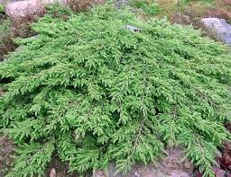
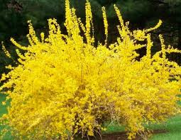
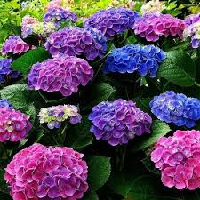
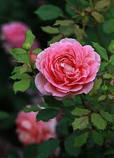
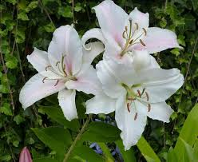
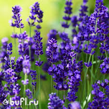

Популярные категории
Тюльпаны
Традиционный весенний цветок с богатой палитрой оттенков:
белый, жёлтый, красный, оранжевый, фиолетовый, чёрный,
многоцветный — нежные бутоны вобрали в себя всё великолепие
цвета. Существует поверье, согласно которому следует дарить
только нераскрывшиеся тюльпаны, так как именно в молодом бутоне
спрятано счастье. Как только цветок распустится, это счастье
войдёт в жизнь получателя.
Незабудки
Это деликатные и очаровательные цветы, которые с давних
времен символизируют верную любовь, вечную память и
ностальгию о тех, кого уже нет рядом с нами, но кто присутствует в нашей памяти. Их нежные голубые, розовые или белые цветки
часто ассоциируются с прекрасными воспоминаниями и
чистосердечными чувствами.
Мимоза
Это австралийский вечнозелёный кустарник, также
известный как Серебристая акация. Пушистые соцветия бывают
жёлтого, розового и кремового цвета. Во время цветения
появляется множество маленьких шариков, которые распускаются
в пушистые цветки. На языке цветов она означает солнце,
постоянство и возрождение. А также неизменность чувств.
Сад и огород
Мы предлагаем большой выбор ручных инструментов и
передовых электрических устройств, защитную одежду,
которая обеспечит безопасность во время работы,
садовые емкости различных размеров и отличные варианты
для хранения. Каждый товар имеет подробное описание,
чтобы вы смогли выбрать для себя подходящее решение.
Хиты продаж

Можжевельник
₽599.90
Хвойный вечнозеленый кустарник с густой колонновидной кроной. Ветви прямые, плотно прижатые к стволу и растут вверх. Высота растения может достигать 4х метров.
Добавить в корзину

Форзиция
₽699.90
Эффектный раннецветущий кустарник с желтыми цветами, густо покрывающими по-зимнему голые ветки, принадлежащий семейству Маслиновые.
Добавить в корзину

Гортензия
₽499.90
Растения с нежными цветками, которые станут оригинальным украшением вашего участка. Гортензия любит свет, поэтому найдите для неё солнечное место.
Добавить в корзину

Роза
₽350.90
Многолетний кустарник, цветок которого давно стал символом красоты и любви. Розы бывают различных цветов, форм и размеров, что делает их одними из самых популярных цветов в мире.
Добавить в корзину

Лилия
₽350.90
Ароматный цветок с шестью звёздчатыми лепестками, широко известный как гербовая фигура французских монархов. Растение луковичное и многолетнее.
Добавить в корзину

Лаванда
₽350.90
Представляет собой вечнозеленый полукустарник. Символ природной красоты, умиротворения и благополучия, привлекающий своей уникальной эстетикой и прекрасным ароматом.
Добавить в корзину
Интересные факты
Розы
...
Садовые розы – продукт многовековой культуры. Они созданы человеком в результате длительного и сложного процесса улучшения некоторых видов дикорастущих роз. Этот процесс продолжается и сегодня, так как постепенно вовлекаются в культуру все новые виды, появляются новые садовые группы, растет ассортимент садовых роз. Приступая к выращиванию садовых роз необходимо знать свойства дикорастущих роз, которые повсеместно называются шиповниками. Дикорастущие розы широко распространены в холодных и умеренных зонах. Розы относятся к ботаническому роду Rosa, насчитывающему более 300 видов, и входят в семейство розоцветных (Rosaceae). К типичным морфологическим признакам рода Rosa отнесены:
форма, величина куста, его характерные особенности;
длина направление и окраска побегов;
форма, величина, расположение и окраска шипов;
форма, величина, окраска и текстура листьев;
форма, величина и окраска бутона;
форма, величина, окраска и махровость цветка;
форма его в открытом состоянии;
расположение, форма лепестков и чашелистиков;
расположение и количество цветков на цветоносных побегах;
характерные признаки запаха;
время и особенности цветения;
форма, величина и окраска и плодов.
Лилии
...
История лилий берет своё в Персии, столицу которой называют городом лилий. Это одно из самых древних растений. Изображения лилии находят на античных фресках и старинных манускриптах. В Древней Греции лилия была символом надежды, на Руси- мира и непорочности, а во Франции эти цветы обозначали - милосердие, сострадание и правосудие.
Темные лилии- символизируют страсть, Розовые- юность,Белые- непорочность, Тигровая- знак неординарности. Знатоки примет верят, что изящное растение появившееся в доме, непременно принесёт его хозяевам гармонию и мат. благополучие, а одиноким людям поможет обрести спутника жизни.
С лилиями связана богатая история, на протяжении которой они олицетворяли различные качества и ценности в разных культурах мира. Уже в древних цивилизациях, таких как древнегреческая и древнеримская, лилии были символом чистоты, благородства и возвышенности. Они часто ассоциировались с богами и героями мифологии, а их изображения украшали храмы и монументы.
В христианской традиции лилии стали символом девственности и непорочности, а также воплощением чистоты и духовной красоты. Они часто ассоциировались с Девой Марией и использовались в искусстве как знак ее святости.
Значение лилий также находит отражение в мировой литературе и искусстве. Они вдохновляли поэтов, художников и музыкантов своей красотой и символическим значением, становясь неотъемлемой частью мировой культуры и искусства.
Что означает лилия на языке цветов
На языке цветов лилия имеет множество символических значений, которые могут варьироваться в зависимости от конкретного контекста и культурных традиций. Однако общие темы, связанные с лилией, включают:
1. Чистота и непорочность: Во многих культурах лилия ассоциируется с чистотой и непорочностью. Это может быть связано с библейским представлением о лилии как символе чистоты и духовной красоты.
2. Светлые чувства и чувственность: Лилия также может символизировать светлые чувства, такие как любовь, нежность и чувственность. Её красота и изысканность часто ассоциируются с эмоциональной теплотой и романтическими чувствами.
3. Особый подарок: Лилия часто воспринимается как особый и прекрасный подарок. Она может быть символом внимания, уважения и восхищения.
4. Парфюмерия и ароматерапия: Аромат лилии также играет важную роль в символике. Его нежный и привлекательный запах ассоциируется с чувственностью и расслаблением, что делает лилию популярным ингредиентом в парфюмерии и ароматерапии.
В целом, лилия представляет собой многогранный символ, который может олицетворять различные качества и эмоции, от духовной чистоты до романтического влечения.
Каждый цвет лилий может нести своё уникальное символическое значение, вот некоторые из них:
1. Белая лилия: Самый распространенный цвет лилий, белый, обычно ассоциируется с чистотой, невинностью и духовной красотой. Она часто используется в свадебных букетах и церемониях, символизируя чистое и беспорочное начало.
2. Розовая лилия: Розовый цвет лилий часто ассоциируется с нежностью, любовью и женственностью. Она может быть подарена как знак внимания и нежных чувств.
3. Красная лилия: Красная лилия символизирует страсть, силу и энергию. Этот цвет может использоваться для выражения глубокой любви и страстных чувств.
4. Оранжевая лилия: Оранжевый цвет лилий ассоциируется с радостью, теплом и энергией. Он может быть использован для выражения радости и позитивных эмоций.
5. Желтая лилия: Желтый цвет лилий обычно ассоциируется с радостью, дружбой и счастьем. Этот цвет может быть символом солнечного настроения и оптимизма.
6. Фиолетовая лилия: Фиолетовый цвет лилий может символизировать роскошь, романтику и изысканность. Он может быть использован для выражения утонченных чувств и глубокого влечения.
7. Лиловая лилия: Лиловый цвет лилий может быть символом мистики, загадочности и магии. Он может использоваться для выражения таинственных и необычных чувств.
Тюльпаны
...
Тюльпан (Tulipa) — это многолетнее травянистое растение семейства лилейных (Liliaceae). Цветы тюльпана имеют разнообразные формы и оттенки, от простых одиночных до махровых и двухцветных. Этот цветок известен своей элегантностью и разнообразием, что делает его популярным как в садоводстве, так и в цветочных композициях.
История тюльпана уходит в глубокие века и связана с Востоком, где он был выращен и широко ценился еще в древние времена. Тюльпаны пришли в Европу из Турции в XVI веке и стали объектом поклонения и торговли, вызывая настоящий цветочный бум. Эпоха тюльпановой лихорадки в Нидерландах (XVII век) остается одной из самых удивительных страниц истории садоводства и экономики.
Тюльпан - это особенный цветок, который сопровождал турок в их путешествии по Земле. Он переместился из Центральной Азии через Иран и обосновался в Анатолии, откуда он был разбросан по всей Европе. За время своего долгого пути ему удалось приспособиться к любым условиям, став обязательным символом. Предлагая красоту своим цветом и осанкой и выражая силу своей долговечностью в суровых природных условиях, тюльпаны украшают горы, холмы и равнины, приглашая истории и легенды. По мере того как тюльпаны получили широкое распространение, они укоренились в анатолийской культуре и на земле, вдохновляя художников на протяжении поколений. Показанные в плитках султаната рома и тонких мотивах османского искусства, тюльпаны приветствуются мастерскими мазками европейских художников.
Значение тюльпана в культуре и искусстве
Тюльпан, благодаря своей красоте и изысканности, стал не только объектом для изучения и выращивания, но и важным символом в различных культурах мира. Он появляется в литературе, живописи, архитектуре и религиозных обрядах. В мире искусства тюльпан стал натурным мотивом для множества произведений, от картин до скульптур, символизируя красоту, нежность и краткость бытия.
Основные характеристики тюльпана
Тюльпан (Tulipa) — это многолетнее луковичное растение, принадлежащее к семейству лилейных (Liliaceae). Оно обладает следующими характеристиками:
1. Луковица: У тюльпана имеется луковица, из которой растение развивается и цветет. Луковица тюльпана является хранилищем питательных веществ, необходимых для роста и развития.
2. Стебель и листья: У тюльпана прямой стебель, на верхушке которого распускается соцветие. Листья обычно линейные или ланцетные, расположены на стебле в виде розетки.
3. Цветы: Цветки тюльпана обычно крупные, одиночные, расположены на верхушке стебля. Они могут иметь разнообразные формы и цветовую гамму, что делает тюльпаны популярными в садоводстве и флористике.
Разнообразие сортов и видов
Тюльпаны разнообразны по своим характеристикам, их можно разделить на несколько основных групп в зависимости от характеристик цветков, луковиц и других особенностей:
1. По форме цветков: существуют тюльпаны с одним цветком, махровые сорта с более чем одним рядом лепестков, либо сочетающие в себе оба типа.
2. По времени цветения: ранние, средние и поздние сорта, что позволяет создавать ковры цветов на протяжении всего весеннего сезона.
3. По высоте растений: существуют как низкорослые, так и высокорослые сорта тюльпанов, что позволяет использовать их в различных композициях и озеленении.
Цветовая гамма и формы цветков
Тюльпаны предлагают широкий спектр цветов и оттенков, включая:
1. Одноцветные: от ярких красных и оранжевых до нежных розовых и белых.
2. Двуцветные: с комбинацией двух или более цветов на одном цветке, создающих красочные контрасты.
3. Формы цветков: от простых одиночных цветков до махровых, пионовидных, пушистых и лепестков в форме звезды.
Такое разнообразие позволяет садоводам и флористам выбирать тюльпаны для создания разнообразных композиций и цветочных ансамблей, удовлетворяя самые изысканные вкусы и предпочтения.
Орхидеи
...
Относится к роду травянистых растений семейства Астровые или Сложноцветные, включающему в себя 42 вида растений. Хризантема близка к тысячелистнику и пижме, она произрастает в умеренных и северных широта, преимущественно в Азии.
В мире цветов есть такие, которые в себе несут целые легенды и истории. Одним из таких волшебных цветов является хризантема. Этот прекрасный и неповторимый цветок притягивает взгляд своими изысканными лепестками и заставляет сердца трепетать своей красотой.
Родиной хризантемы является Китай, первое упоминание о ней был в 551 году до н.э. Затем цветы, похожие на ромашки, завезли в Японию, и там они стали символом этой страны. В Европе хризантема оказалась в XVII веке, а в России - в XIX столетии. На сегодняшний день благодаря работе селекционеров существует огромное множество видов и оттенков этого растения. В нашем интернет-магазине вы можете заказать кустовую хризантему, хризантему экстра, стандарт и сантини, а так же букеты с ними. Все перечисленные сорта представлены в разных окрасках.
Легенда
Однажды, в Стране восходящего солнца скверный дракон похитил небесное светило. Но при этом он сильно обжёгся, разозлился и стал разрывать Солнце на кусочки. На Землю падали искры, и они превращались в прекрасные цветы - хризантемы. Вторая легенда об этом растении гласит, что цветок был способен вернуть людям молодость и продлить их жизнь. Об этом узнал один из самых твёрдых и безжалостных азиатских императоров. Он отправил более полумиллиона молодых людей на поиски хризантемы. Но красивый цветок их очаровал, поэтому они не стали возвращаться домой, а построили новое государство на чудесном острове - Японию. А тем временем жестокий император умер от старости.
Значение цветка
В большинстве европейских стран хризантемы несут положительный смысл. Однако, в Италии, Англии и Франции эти цветы по традиции приносят на похороны, так как в них вкладывается значение смерти. В Австралии хризантема является символом дня матери. А в восточных странах цветок, похожий на ромашку имеет особенный смысл - долголетие и возрождение. Поэтому для азиатов букет из хризантем будет уместен в подарок с пожеланием долгих лет жизни или в качестве поздравления с рождением ребёнка. И не будем забывать о том, что хризантема изображена на гербе Японии.